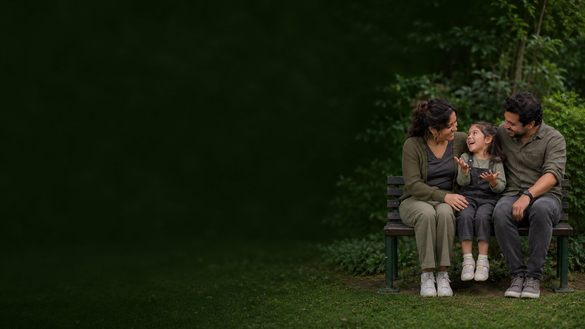
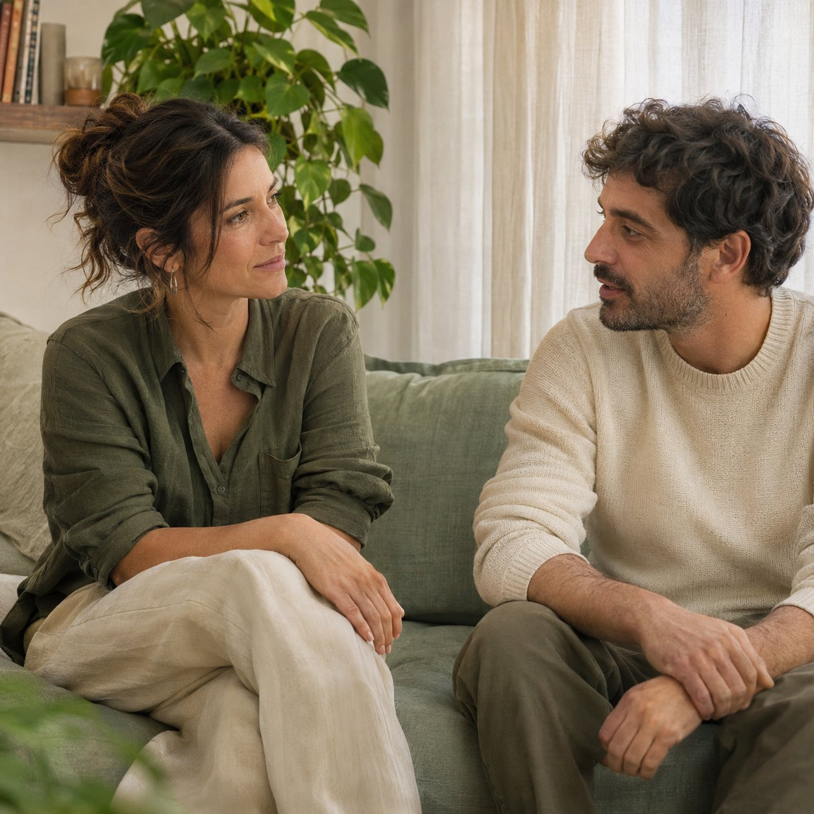
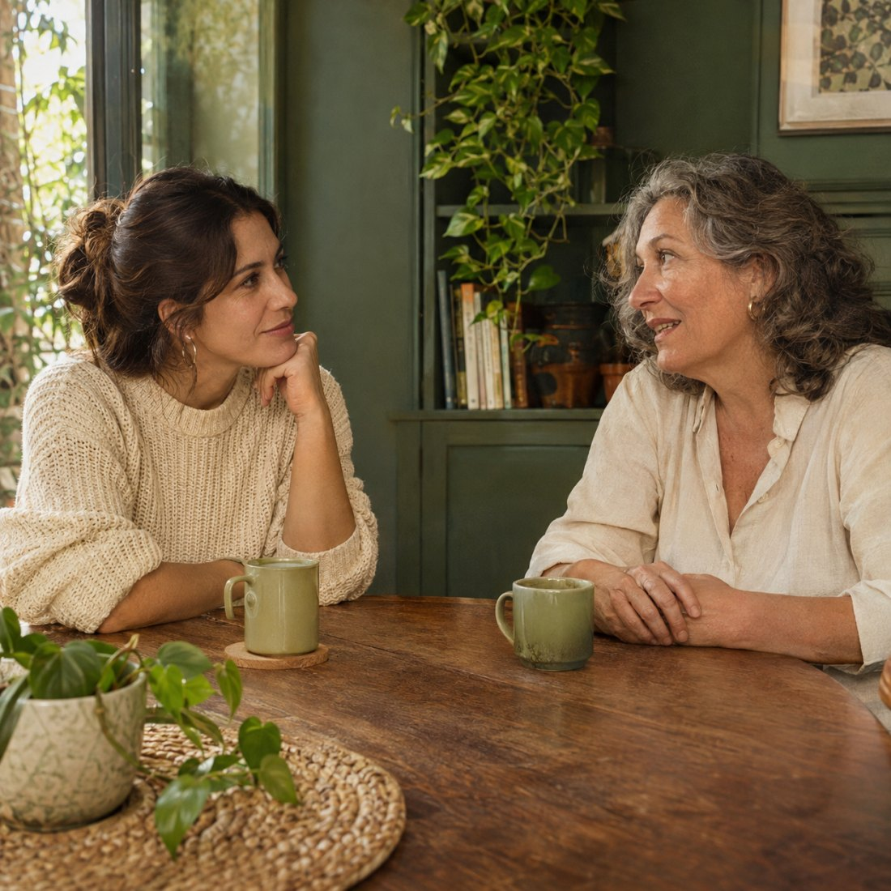
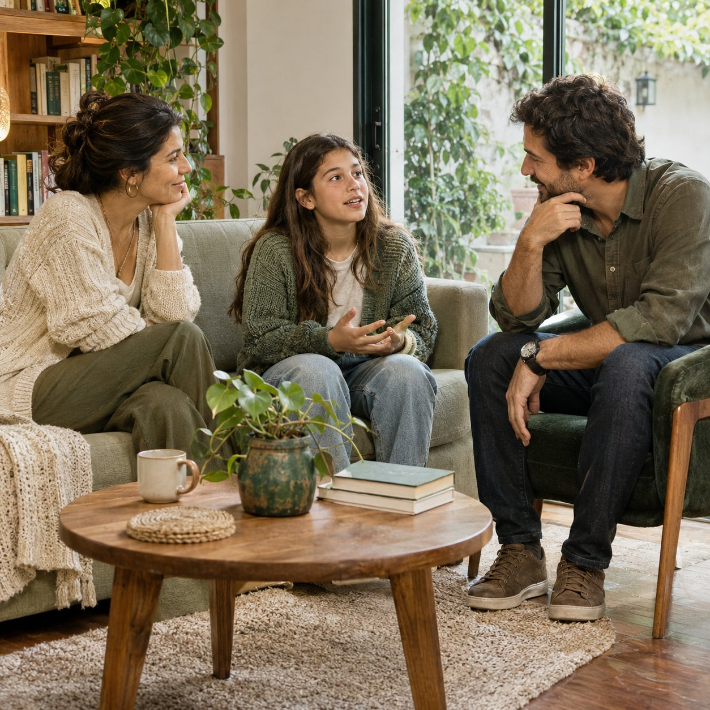
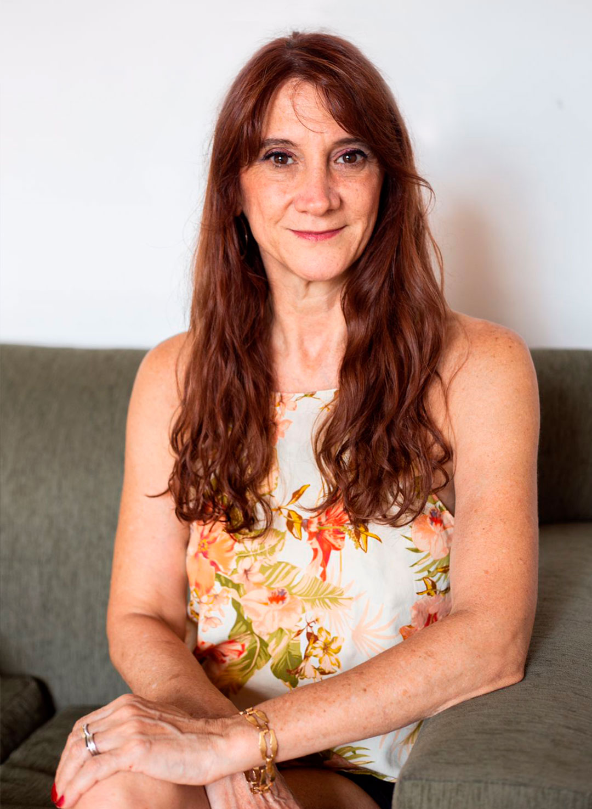

Family Hold · Terapia de pareja y familiar
Un espacio para cuidar
lo que nos une.
Atención psicológica para parejas y familias. Te acompañamos a comprender lo que está pasando y a construir nuevas formas de comunicarte.

Family Hold · Terapia de pareja y familiar
Atención psicológica para parejas y familias. Te acompañamos a comprender lo que está pasando y a construir nuevas formas de comunicarte.

Terapia de pareja
A veces una conversación necesita otro espacio. Trabajamos sobre los conflictos, la comunicación y las decisiones que atraviesan la relación.
Terapia familiar y crianza respetuosa
La crianza, los límites y los cambios familiares pueden abrir preguntas difíciles. Un espacio para comprenderlas y encontrar recursos para la convivencia.
Terapia de pareja y familiar
Atención psicológica para parejas y familias. Nuevas formas de escuchar, comprender y comunicarse.
Nuestra propuesta
Comprender cómo nos relacionamos puede abrir nuevas posibilidades. En Family Hold ofrecemos un espacio de escucha y trabajo para parejas y familias que buscan acompañamiento profesional.

Hacer lugar a lo que pasa es el comienzo de otra conversación.
Áreas de trabajo
Cada consulta parte de una historia singular. Construimos una propuesta de acompañamiento según las necesidades de la pareja o la familia.
01 · Terapia de pareja
Un espacio para trabajar conflictos, comunicación y decisiones que atraviesan la relación.
Terapia de pareja
02 · Terapia familiar
Cambios, tensiones y nuevas formas de convivencia.
Terapia familiar03 · Modalidad virtual
Atención en castellano para parejas y familias.
Terapia virtualMotivos de consulta
No hace falta tener todas las respuestas para pedir ayuda. A veces alcanza con registrar que algo necesita otro espacio.
Forma de trabajo
El proceso se adapta a la situación y a quienes participan. Sin fórmulas cerradas, con un encuadre profesional y objetivos conversados.
Un encuentro inicial para escuchar el motivo de consulta y conocer el contexto.
Identificamos dinámicas, necesidades y recursos presentes en la situación.
Proponemos una modalidad de trabajo adecuada para la pareja o la familia.

Dirección profesional
Psicóloga graduada en la UBA en 1990, fundadora y directora de Family Hold. Su trayectoria reúne más de tres décadas de trabajo clínico con infancias, parejas y familias.
Su enfoque integra escucha, respeto, empatía e inteligencia emocional, con estrategias pensadas para cada familia.
Terapia virtual global
Atención en castellano para quienes necesitan sostener un proceso terapéutico más allá de la distancia.
Preguntas frecuentes
Podés escribir por WhatsApp o correo. Te orientaremos sobre la modalidad y disponibilidad.
Sí. Family Hold ofrece atención virtual en castellano para parejas y familias.
Se define según el motivo de consulta y el momento del proceso. La propuesta se conversa en los primeros encuentros.
Esos datos se informan al momento de la consulta, según la modalidad requerida.
Dar el primer paso
Escribinos para consultar por el espacio de atención que estás buscando.